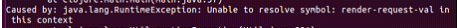
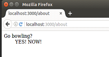
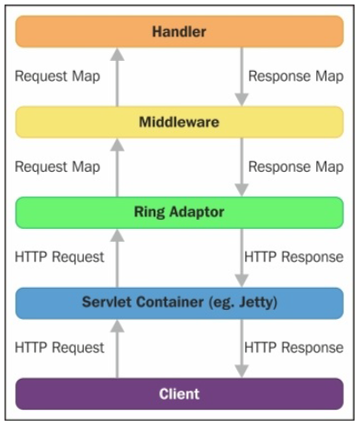
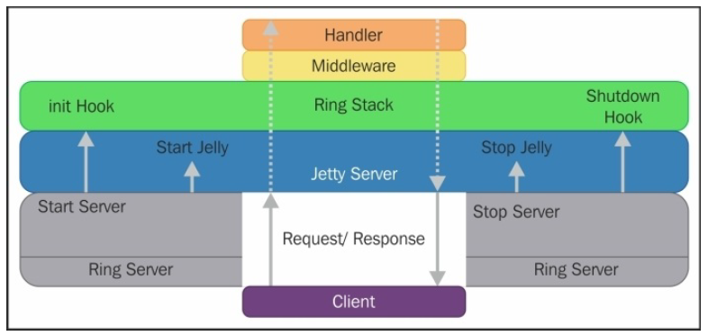

Ring and Ring Server
Table of Contents
1 개요
- core technologies driving our application, and show you how to use the development web server.
- ring 은 HTTP서블릿 구현(글래스피시, 톰캣, 제티 등)을 기반으로 동작한다.
- standalone으로 동작할 수도 있다.
- 간단하게 말해, 복잡한 서블릿 구현 기술을 간단한 클로저 맵으로 표현할 수 있게 해주는 라이브러리라고 생각하자.
2 Ring을 구성하는 5개의 컴포넌트
2.1 request maps
- http 요청을 간단한 클로저 맵으로 표현한다.
- Java Servlet API와 HTTP/1.1 스펙에 표현되어 있는 요소들을 map의 키로 표현가능하다.
- :server-port , :server-name, :uri, :query-string, :headers 등등.
2.2 response maps
- http 응답을 클로저 맵으로 표현한다.
- :status, :headers, :body
2.3 handlers
- request map 을 입력받아 response map을 리턴하는 클로저 함수이다.
- 다양한 핸들러 함수를 구현할 수 있다.
- 어플리케이션의 핵심이다.
2.3.1 실습 : 새로운 핸들러 추가하기
- /routes/home.clj 파일에 새로운 경로 about을 추가해본다.
- 주의점 ! defroutes 기술 부분 위에 추가하는 핸들러 펑션이 위치해야 한다!
- 먼저 핸들러 펑션이 평가되고 나야 defroute에서의 참조가 제대로 동작한다.
- 그렇지만 않으면 Unable to resolve symbol 예외가 발생

2.4 middleware
- request map만으로는 표현이 안되는 정보를 추가하고 싶을 때 사용한다.
- 미들웨어는 핸들러를 입력받아 새로운 핸들러 함수를 리턴한다.
2.4.1 실습 : 새로운 미들웨어 추가하기
- 핸들러에서 응답을 받아서 유저에게 내려보내기 전에 응답에 YES!NOW!를 붙인다.

2.5 adapters
- HTTP 와 핸들러 사이의 글루(접착제)이다.
- Ring 라이브러리는 Jetty adapter를 이용한다. (ring-jetty-adapter)
- 예를들어 http요청을 처리하는 순서는 다음과 같다.

- Ring Adaptor 를 거치면서부터 HTTP 요청이 클로저의 맵으로 변환되어 처리된다.
- adapter 까지 작성하는 경우는 많지 않고 대부분의 프로그래밍은 handler와 middleware를 작성하는 것이 될 것이다.
3 Ring Server 란 무엇인가?
- ring server 는 ring 과 다르다.
- ring server 는 실제 웹서버를 시작하는 등의 일을 수행한다.

- ring server 는 시작시에 등록된 어플리케이션 초기화 훅( initialization hooks) 을 실행하고, 어플리케이션 핸들러를 서비스해주는 내장 제티 서버를 시작한다.
- 종료될 때는 내장 제티 서버를 종료하고, 등록된 셧다운 훅(shutdown hooks) 을 실행한다.
- hipstr.handler 와 hipstr.repl 네임스페이스를 이용해서 위의 동작을 실습해보자.
3.1 초기화 훅
- handler.clj 의 init 메서드에 initialization hook 을 추가하면 된다.
- init 메서드는 서버가 구동될 때 실행된다.
- 따라서 어플리케이션 런타임 구동 환경 들을 등록해주면 된다.
3.2 셧다운 훅
- handler.clj 의 destory 메서드에 shutdown hook 을 추가하면 된다.
4 hipstr.repl
repl.clj 파일을 열어보면 간단한 펑션을 몇 개 가지고 있는 것을 볼 수 있다.
4.1 서버 시작하기
start-server : 파라메터로 입력받은 포트로 서버를 시작한다.
4.2 서버 중지하기
stop-server
4.3 핸들러 가져오기
- get-handler
- app handler를 리턴한다. (정적 리소스 디렉토리를 노출시키는)
- 언제 필요한거지?
5 Ring Server 의 설정을 바꾸고 구동하기
- ring server를 구동하기 위한 방법은 두 가지가 있다.
- 첫번째는 hipstr.repl 네임스페이스를 REPL에 로딩한 후 start-server 메서드를 호출하는 것이고
- 두번째는 커맨드라인에서 lein ring server 를 치는 것이다.
- 양쪽 방법 모두 내장된 제티 서버가 호출되고, 브라우저 팝업이 열린다.
- 브라우저 팝업을 원하지 않으면 lein ring server-headless 를 입력한다.